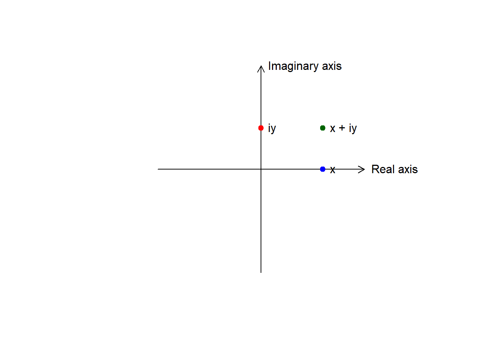
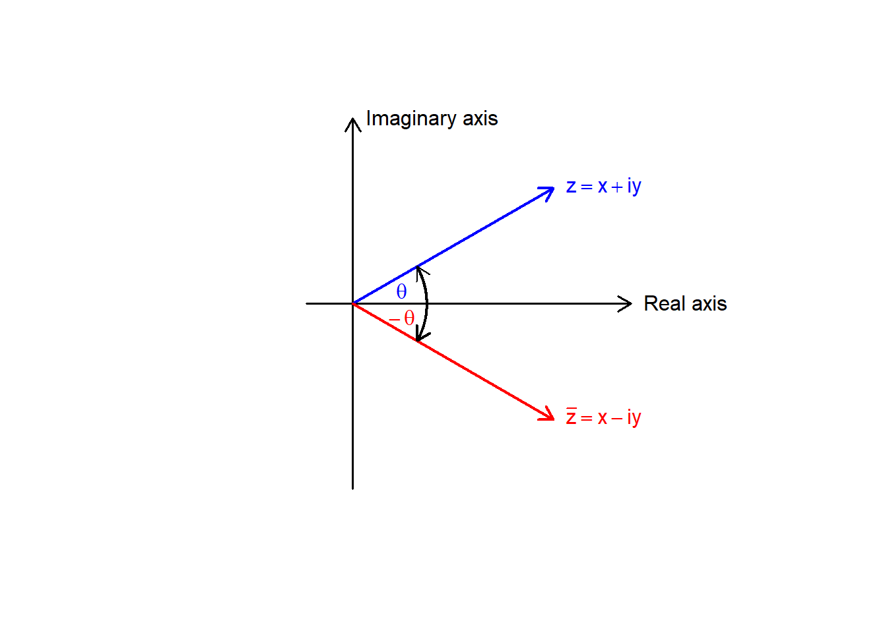
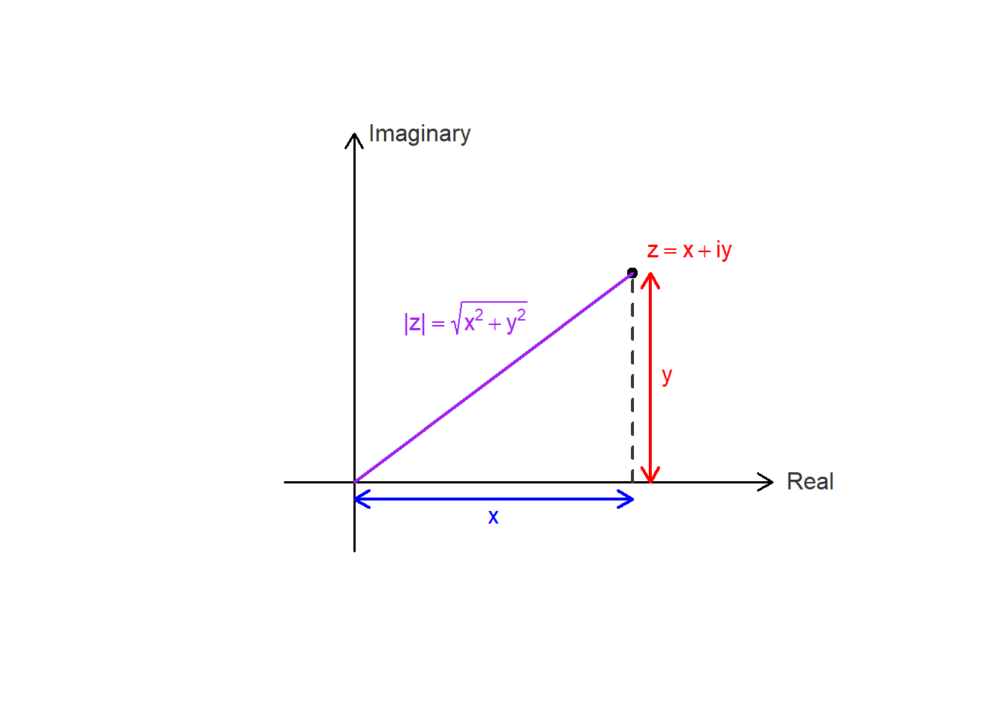

Chapter 2 Complex Numbers
A complex number is defined as \(z = x + iy\), where \(x, y \in \mathbb{R}\). Here, \(x\) represents the real part (\(\operatorname{Re}z\)) and \(y\) represents the imaginary part (\(\operatorname{Im}z\)).
The set of all such numbers, \(\mathbb{C}\), constitutes the complex plane. Since \(\mathbb{R} \subset \mathbb{C}\), real numbers are identified as complex numbers where \(\operatorname{Im}z = 0\).
There exists a bijective correspondence between \(\mathbb{C}\) and the Euclidean plane \(\mathbb{R}^2\), expressed as:
\[z = x + iy \longleftrightarrow (x, y)\]

In this geometric representation:- The real axis corresponds to the \(x\)-axis.
- The imaginary axis (\(i\mathbb{R}\)), containing purely imaginary numbers of the form \(iy\), corresponds to the \(y\)-axis.
2.0.1 Basic Definitions and Algebra
- A complex number has the form \(z = a + ib\) where \(a, b\) are real numbers
- \(a\) is the real part: \(\text{Re}(z) = a\)
- \(b\) is the imaginary part: \(\text{Im}(z) = b\)
- A number is purely imaginary if \(a = 0\)
- A number is real if \(b = 0\)
- Zero is the only number that is both real and purely imaginary
2.0.3 Complex Conjugate
The conjugate of \(z = a + ib\) is \(\bar{z} = a - ib\)

Properties: \(\text{For all } z,w \in \mathbb{C}:\)
- \(\overline{z+w} = \bar{z} + \bar{w}\)
- \(\overline{zw} = \bar{z}\,\bar{w}\)
- \(\overline{(z/w)} = \frac{\bar{z}}{\bar{w}},\ w \neq 0\)
- \(\frac{1}{z} = \frac{\bar{z}}{|z|^{2}},\ z \neq 0\)
- \(z\) is real \(\Longleftrightarrow z = \bar{z}\)
- \(z\) is purely imaginary \(\Longleftrightarrow z = -\bar{z}\)
- \(\overline{z+w} = \bar{z} + \bar{w}\)
2.0.4 Absolute Value (Modulus)
- The absolute value or modulus of \(z = a + ib\) is:
- \(|z| = \sqrt{a^2 + b^2} = \sqrt{z\bar{z}}\)

- \(|z| = \sqrt{a^2 + b^2} = \sqrt{z\bar{z}}\)
- Properties:
- \(|z| \geq 0\) for all \(z\), with equality if and only if \(z = 0\)
- \(|zw|^{2} = (zw)(\overline{zw}) = (z\bar{z})(w\bar{w}) = |z|^{2}|w|^{2}\)
- \(|z_1 \cdot z_2| = |z_1| \cdot |z_2|\)
- \(\left|\frac{z_1}{z_2}\right| = \frac{|z_1|}{|z_2|}\) for \(z_2 \neq 0\)
- \(|z_1 + z_2| \leq |z_1| + |z_2|\) (Triangle inequality)
- \(\left| |z_1| - |z_2| \right| \leq |z_1 - z_2|\)
2.0.5 Important Inequalities
Triangle Inequality: \(|z_1 + z_2| \leq |z_1| + |z_2|\)
- Equality holds if and only if \(\frac{z_1}{z_2} > 0\) (i.e., the ratio is positive real)
\(-|z| \leq \text{Re}(z) \leq |z|\)
- Equality on right when \(z\) is positive real
\(-|z| \leq \text{Im}(z) \leq |z|\)
Cauchy’s Inequality: \(|a_1b_1 + a_2b_2 + \ldots + a_nb_n|^2 \leq (|a_1|^2 + \ldots + |a_n|^2)(|b_1|^2 + \ldots + |b_n|^2)\)
- Equality holds if and only if the \(a_i\) are proportional to the \(b_i\)
2.0.6 Fundamental Theorem of Algebra
A complex polynomial of degree \(n \ge 0\) is a function of the form
\[ p(z) = a_n z^n + a_{n-1} z^{\,n-1} + \cdots + a_1 z + a_0, \qquad z \in \mathbb{C}, \]
where \(a_0, a_1, \ldots, a_n\) are complex numbers and \(a_n \neq 0\).
A fundamental property of the complex numbers is that every polynomial with complex coefficients can be factored completely into linear factors.
Theorem 2.1 (Fundamental Theorem of Algebra) Every complex polynomial \(p(z)\) of degree \(n \ge 1\) admits a factorization
\[ p(z) = c\,(z - \zeta_1)^{m_1} (z - \zeta_2)^{m_2} \cdots (z - \zeta_k)^{m_k}, \]
where the numbers \(\zeta_1, \ldots, \zeta_k\) are distinct complex roots of \(p\), each multiplicity satisfies \(m_j \ge 1\), and \(m_1 + m_2 + \cdots + m_k = n.\) This factorization is unique, up to a permutation of the factors.
Proof. Omitted. Multiple complete and rigorous proofs are available at ProofWiki.
The uniqueness of the factorization is straightforward. The points \(\zeta_1, \ldots, \zeta_k\) are uniquely determined as the zeros of \(p(z)\), that is, the solutions of \(p(z)=0\). Each multiplicity \(m_j\) is the unique integer \(m \ge 1\) for which \(p(z)\) can be written in the form \((z-\zeta_j)^m q(z)\) with \(q(\zeta_j)\neq 0\).
To prove that such a factorization exists, one uses induction on the degree \(n\) of the polynomial. The key step is to show that \(p(z)\) has at least one root \(\zeta_1\). Once a root is found, the polynomial can be factored as \(p(z) = (z-\zeta_1) q(z)\), where \(q(z)\) has degree \(n-1\). By the induction hypothesis, \(q(z)\) can be factored into linear factors, which completes the factorization of \(p(z)\). Thus, the Fundamental Theorem of Algebra is equivalent to the statement that every complex polynomial of degree \(n \ge 1\) has at least one zero.
2.1 Geometric Representation
2.1.1 The Complex Plane
- A complex number \(z = a + ib\) corresponds to the point \((a,b)\) in the plane
- The \(x\)-axis is called the real axis
- The \(y\)-axis is called the imaginary axis
- The plane is called the complex plane

2.1.2 Vector Interpretation
- Complex numbers can be represented as vectors from the origin
- Vector addition corresponds to complex addition
- The length of the vector is \(|z|\)
- The distance between points \(z_1\) and \(z_2\) is \(|z_1 - z_2|\)
2.1.3 Polar Form
- A complex number can be written in polar form:
- \(z = r(\cos\theta + i\sin\theta)\) where \(r = |z|\) and \(\theta = \arg(z)\)
- \(r\) is the modulus: \(r = |z| = \sqrt{a^2 + b^2}\)
- \(\theta\) is the argument or amplitude: \(\theta = \arg(z)\)
- Properties of polar form:
- For \(z_1 = r_1(\cos\theta_1 + i\sin\theta_1)\) and \(z_2 = r_2(\cos\theta_2 + i\sin\theta_2)\):
- \(z_1z_2 = r_1r_2[\cos(\theta_1 + \theta_2) + i\sin(\theta_1 + \theta_2)]\)
- \(\arg(z_1z_2) = \arg(z_1) + \arg(z_2)\)
- \(\arg\left(\frac{z_1}{z_2}\right) = \arg(z_1) - \arg(z_2)\)
2.1.4 De Moivre’s Formula
- For \(z = r(\cos\theta + i\sin\theta)\):
- \(z^n = r^n(\cos n\theta + i\sin n\theta)\)
- For \(r = 1\):
- \((\cos\theta + i\sin\theta)^n = \cos n\theta + i\sin n\theta\)
2.1.5 Roots of Complex Numbers
- The \(n\)-th roots of \(z = r(\cos\theta + i\sin\theta)\) are:
- \(\sqrt[n]{z} = \sqrt[n]{r}\left[\cos\left(\frac{\theta + 2\pi k}{n}\right) + i\sin\left(\frac{\theta + 2\pi k}{n}\right)\right]\) for \(k = 0, 1, 2, \ldots, n-1\)
- There are \(n\) distinct \(n\)-th roots of any non-zero complex number
- These roots have equal moduli and are equally spaced around a circle
- For \(z = 1\), the roots are called the \(n\)-th roots of unity
2.1.6 Equations in the Complex Plane
- Circle with center \(a\) and radius \(r\): \(|z - a| = r\)
- In algebraic form: \((z - a)(\bar{z} - \bar{a}) = r^2\)
- Straight line: \(z = a + bt\) where \(t\) is a real parameter
- Two lines are parallel if \(b'\) is a real multiple of \(b\)
- Lines are orthogonal if \(\frac{b'}{b}\) is purely imaginary
- The angle between lines is \(\arg\frac{b'}{b}\)
2.1.7 Stereographic Projection and the Riemann Sphere
The extended complex plane is the complex plane together with the point at infinity. We denote the it by \(C^* = c\cup\{\infty\}\). - The extended complex plane includes \(\infty\) and can be represented on a unit sphere - Under stereographic projection, the point \((x_1, x_2, x_3)\) on the sphere corresponds to: - \(z = \frac{x_1 + ix_2}{1 - x_3}\)
- The north pole \((0,0,1)\) corresponds to \(\infty\)
- Properties:
- Circles on the sphere correspond to circles or lines in the plane
- The distance formula: \(d(z,z') = \frac{2|z-z'|}{\sqrt{(1+|z|^2)(1+|z'|^2)}}\)
- The sphere is often called the Riemann sphere
2.1.8 Key Formulas and Results
\(z\bar{z} = |z|^2 = a^2 + b^2\)
\(\frac{1}{z} = \frac{\bar{z}}{|z|^2} = \frac{a - ib}{a^2 + b^2}\)
\(z^n = r^n(\cos n\theta + i\sin n\theta)\)
\(\sqrt[n]{z} = \sqrt[n]{r}\left[\cos\left(\frac{\theta + 2\pi k}{n}\right) + i\sin\left(\frac{\theta + 2\pi k}{n}\right)\right]\) where \(k = 0, 1, \ldots, n-1\)
Triangle inequality: \(|z_1 + z_2| \leq |z_1| + |z_2|\)
Cauchy’s inequality: \(\left|\sum_{i=1}^{n} a_i\bar{b}_i\right|^2 \leq \left(\sum_{i=1}^{n}|a_i|^2\right)\left(\sum_{i=1}^{n}|b_i|^2\right)\)
The equation of a circle: \(|z - a| = r\)
The roots of unity: \(\omega^k\) where \(\omega = \cos\frac{2\pi}{n} + i\sin\frac{2\pi}{n}\) and \(k = 0, 1, \ldots, n-1\)
2.2 Exercise
Find the values of \[ (1 + 2i)^3, \quad \frac{5}{-3 + 4i}, \quad \left( \frac{2 + i}{3 - 2i} \right)^2, \quad (1 + i)^n + (1 - i)^n.\]
If \(z = x + iy\) (where \(x\) and \(y\) are real numbers), find the real and imaginary parts of: \[z^4, \quad \frac{1}{z}, \quad \frac{z - 1}{z + 1}, \quad \frac{1}{z^2}.\]
Show that: \[ \left( \frac{-1 \pm i\sqrt{3}}{2} \right)^3 = 1 \quad \text{and} \quad \left( \frac{\pm 1 \pm i\sqrt{3}}{2} \right)^6 = 1\] for all combinations of signs.